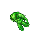

Boa noite galera, demos início hoje ao novo sistema de magias do jogo. As invocações são basicamente um utevo res mais forte, em que o jogador deve ter um contrato com a criatura para invocá-la.
A primeira invocação do servidor será Maoli, o mais poderoso guerreiro dos Hardpans. Somente druidas com um nível superior a 280 podem invocá-lo. Em breve mais invocações serão lançadas no jogo!
A criatura Maoli é encontrada na entrada dos Hardpans e é responsavel pela primeira magia desse novo sistema implantado no servidor, Magia feita para os Druidas quando dizem: "Kuchiyose Maoli"